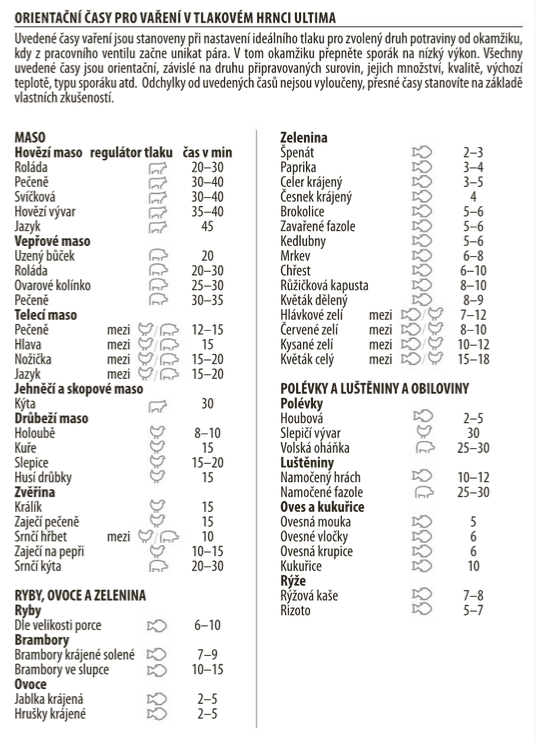

Krkovici nakrájet na velké kousky, smíchat se solí a pepřem a nechat odstát.
V papiňáku rozpálit olej a osmažit maso až trošku zezlátne. Poté přidat ostatní suroviny kromě škrobu.
Papiňák utěsnit a vařit 23 min od vytvoření tlaku. Před odpouštním páry chvíli počkat a až poté páru odpustit
Sundat víko, přidat škrob a omáčku lehce zredukovat.